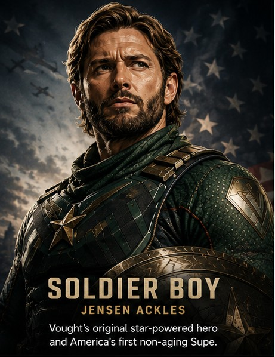
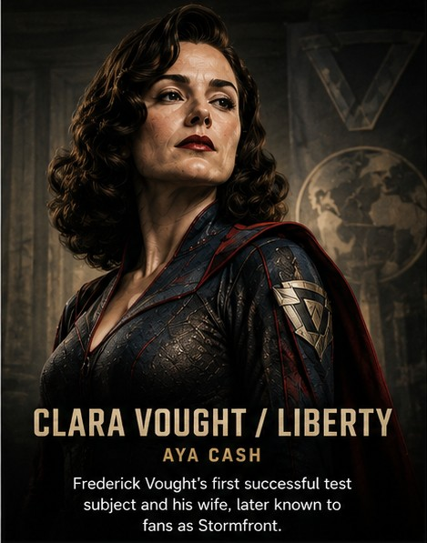
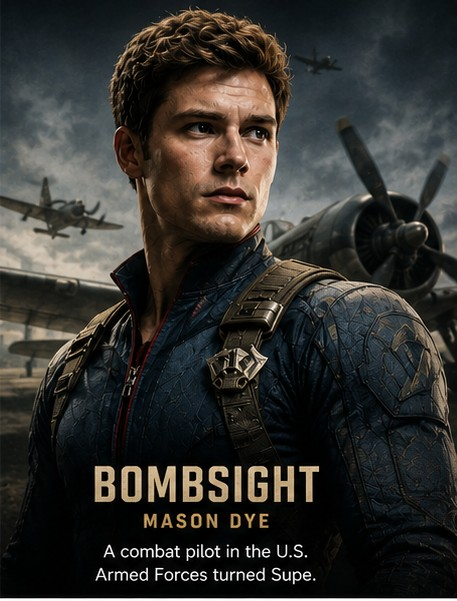
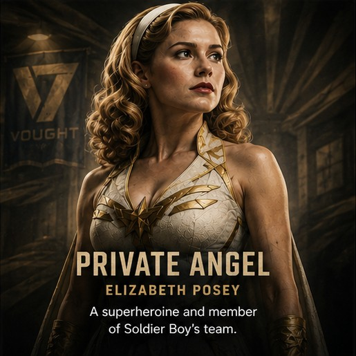
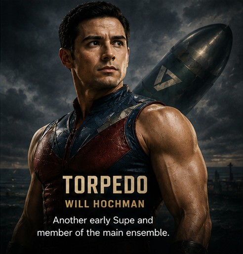

Vought Rising Cast
Confirmed and rumored cast members appearing in Vought Rising from The Boys universe.

Soldier Boy
Jensen Ackles as Soldier Boy: Vought's original star-powered hero and America's first non-aging Supe.

Clara Vought / Liberty
Aya Cash as Clara Vought / Liberty: Frederick Vought's first successful test subject and his wife, later known to fans as Stormfront.

Bombsight
Mason Dye as Bombsight: A combat pilot in the U.S. Armed Forces turned Supe.

Private Angel
Elizabeth Posey as Private Angel: A superheroine and member of Soldier Boy's team.

Torpedo
Will Hochman as Torpedo: Another early Supe and member of the main ensemble.